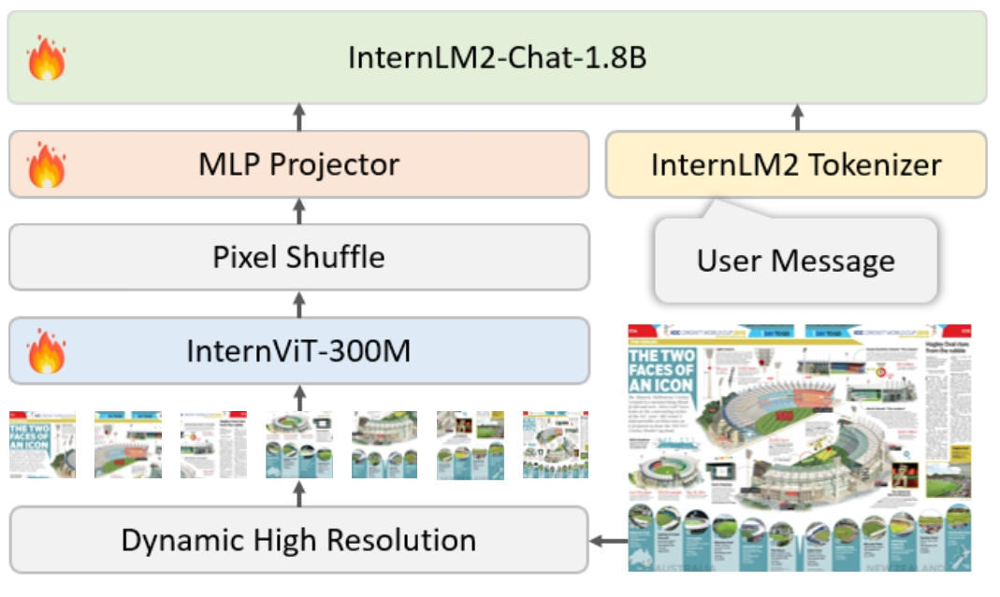

Mini-InternVL (2.1B)
We are excited to introduce Mini-InternVL-Chat. In the era of large global models, many researchers have started to focus on smaller models, such as Gemma-2B and Qwen-1.8B. Inspired by their efforts, we have distilled our vision foundation model InternViT-6B down to 300M and used InternLM-1.8B as our language model. This resulted in a small model with excellent performance.
From the experimental results, we've observed that a smaller language model (1.8B) is well-suited for our smaller vision model (InternViT-300M). This combination maximizes efficiency while maintaining impressive performance across various benchmarks, demonstrating the effectiveness of small models in handling complex tasks.
For better training reproducibility, our training process remains consistent with our InternVL 1.5 model. The data and methodologies used are also largely aligned with those of InternVL 1.5. To reduce training costs, we provide a pre-trained MLP projector and employ around 1 million visual instruction tuning samples for SFT. Our model has a total of 2.1 billion parameters and can be trained within 1 day using 16 A100 GPUs. The code, data, and model will be made publicly available.
Data Preparation
Inspired by InternVL 1.5, we adopted a data-efficient SFT strategy to train Mini-InternVL-Chat, utilizing approximately 1.2M of visual instruction tuning samples in total, all of which are fully open-source. In a macro sense, we build upon ShareGPT-4V and additionally integrate LLaVA-ZH, DVQA, ChartQA, AI2D, DocVQA, GeoQA+, and SynthDoG-EN. Most of the data remains consistent with InternVL 1.5.
For more details about data preparation, please see here.
Performance
Proprietary Model
| model | open-source | #param | DocVQA | ChartQA | InfoVQA | TextVQA | OCRBench | MME | RWQA | AI2D | MMMU | MMB-EN/CN | CCB | MMVet | SEED | HallB | MathVista |
|---|---|---|---|---|---|---|---|---|---|---|---|---|---|---|---|---|---|
| GPT-4V | ✗ | - | 88.4 | 78.5 | - | 78.0 | 645 | 1926.6 | 61.4 | 78.2 | 56.8 | 77.0 / 74.4 | 46.5 | 67.6 | 71.6 | 46.5 | 49.9 |
| Gemini Ultra 1.0 | ✗ | - | - | 90.9 | 80.3 | 82.3 | - | 1933.4 | - | 79.5 | 59.4 | - | - | - | 70.7 | - | 53.0 |
| Gemini Pro 1.0 | ✗ | - | - | 84.1 | 75.2 | 74.6 | 659 | 2034.9 | - | 79.4 | 59.7 | 73.4 / 52.5 | 64.3 | 70.7 | 70.7 | 45.2 | - |
| Gemini Pro 1.5 | ✗ | - | - | 81.4 | 72.7 | 73.5 | - | 1586.6 | 49.8 | 88.7 | 59.4 | - | 52.8 | - | 72.4 | 43.3 | - |
| Qwen-VL-Max | ✗ | - | 93.1 | 79.9 | 73.4 | - | 723 | 2433.6 | 57.3 | 79.4 | 51.3 | 77.6 / 77.5 | 63.5 | 66.6 | - | 41.2 | 51.0 |
| Qwen-VL-Plus | ✗ | - | - | 80.3 | 73.9 | - | - | 2134.5 | 54.9 | 78.1 | 59.4 | - | 58.1 | 71.2 | 72.7 | 47.4 | - |
| Claude-3 Opus | ✗ | - | - | - | - | - | - | 1625.9 | 51.9 | 88.7 | 59.7 | - | - | - | - | - | |
| Claude-3 Sonnet | ✗ | - | - | - | - | - | - | 1453.2 | - | - | - | - | - | - | - | - | |
| Claude-3 Haiku | ✗ | - | - | - | - | - | - | 2069.0 | 49.4 | 80.7 | 59.4 | 80.7 / 79.9 | 71.2 | 63.3 | 70.4 | 44.8 | - |
| HPT Pro | ✗ | - | - | - | - | - | - | 2206.4 | - | 79.2 | 49.9 | - | - | - | - | - | |
| MM1 | ✗ | 30B | - | 68.7 | 73.5 | - | 625 | 68.7 | 88.3 | - | - | - | - | - | - | - | 52.8 |
| Step-1V | ✗ | 100B | 85.6 | 76.1 | 78.1 | - | 621 | - | - | - | - | - | - | - | - | - | |
| Grok-1.5V | ✗ | - | - | 85.6 | 76.1 | 78.1 | - | - | - | - | - | - | - | - | - | - | |
| Text-Monkey | ✓ | 10B | 82.0 | 75.9 | 28.6 | 64.3 | 561 | 2028.0 | 70.4 | 51.1 | - | 81.1 / 79.0 | 49.2 | - | 75.6 | - | - |
| DocOwl-1.5 | ✓ | 8B | 82.2 | 70.7 | 68.6 | - | 569 | 2028.0 | 70.4 | 51.1 | - | 81.1 / 79.0 | 49.2 | - | 75.6 | - | - |
| LLaVA-NeXT | ✓ | 35B | 84.3 | 68.7 | 51.5 | 69.5* | 574 | 2175.4 | 67.5 | 79.0 | 51.6 | 82.1 / 82.0 | 59.2 | 75.6 | 49.3 | 47.7 | 53.5 |
| InternVL 1.2 | ✓ | 40B | 57.7 | 68.0 | 39.5 | 72.5* | 569 | 2175.4 | 67.5 | 79.0 | 51.6 | 82.1 / 82.0 | 59.2 | 75.6 | 49.3 | 47.7 | 53.5 |
| InternVL 1.5 | ✓ | 26B | 90.9 | 83.8 | 72.5 | 80.6 | 724 | 2187.6 | 66.0 | 80.7 | 45.2 | 82.2 / 82.0 | 69.8 | 62.8 | 76.0 | 49.3 | 53.5 |
| Mini-InternVL-Chat (ours) | ✓ | 2.1B | 82.0 | 72.8 | 54.6 | 71.1 | - | - | - | 68.4 | 35.0 | 70.2 / 66.5 | 67.3 | 43.9 | 6.9 | - | - |
MMBench results are collected from the leaderboard.
Training (SFT)
We provide slurm scripts for multi-node multi-GPU training. You can use either 32 or 64 GPUs to train this model. If you use 64 GPUs, training will take approximately 18 hours.
The hyperparameters used for finetuning are listed in the following table.
| Hyperparameter | Trainable Param | Global Batch Size | Learning rate | Epochs | Max length | Weight decay |
|---|---|---|---|---|---|---|
| Mini-InternVL-Chat | 40B (full model) | 512 | 1e-5 | 1 | 2048 | 0.05 |